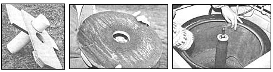
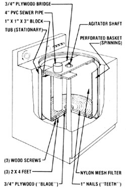

MOTHER-readers have learned how to convert a washing machine into a cement mixer, a potter's wheel, or an outdoor shower. Well, here's the latest idea for recycling this appliance:
I've long marveled at the ingenious workings of a countertop juicer my wife Sandie and I own. This particular model - made by Acme - uses centrifugal force to separate the liquid from the pulp after all the juicy material has been chewed to bits. Not only is the concept fascinating, but the machine is also very well made . . . and it's been more than satisfactory for making a few quarts of juice at a time.
However, since we have access to large quantities of free apples, I decided to pay homage to the Acme's intriguing design by incorporating the same principles in a larger juice extractor. And (over Sandie's strenuous objections) I figured that the family washing machine was a prime candidate for conversion into a motorized cider press.
CIDER PRESS CUTAWAY
After dang near having my marriage license revoked for asking, I was eventually given the privilege of tinkering with the machine. I opened the top of the metal cabinet and took off all the unneeded hardware, gaining access to the porcelain/steel tub. I also removed the agitator from its shaft. Then I jigsawed a doughnut-shaped piece of 3/4" exterior-grade plywood to fit the bottom of the washer's perforated basket. With that done, I drove 1" panel nails (a full 400 of them) through the plywood, so their protruding points could serve as the shredder's teeth. Next, to give the newly fashioned blade a firm foundation, I placed it on three "feet", each cut from a 2 X 4 and glued and nailed in place. I went on to fasten the assembly to the basket with three wood screws, one in each foot.
I still needed something to hold the apples while the nails gobbled them up . . . so I bridged the top of the tub with two 8" X 22" pieces of 3/4" plywood, which crossed just in front of the agitator shaft. At the point where the two braces joined, I cut a hole just large enough to force in a piece of (new) 4" PVC sewer pipe. I pushed the lower end of the conduit down to within a quarter-inch of the nail points and sealed it to the bridge with a liberal amount of epoxy.
At that point, I took stock of my handiwork and pondered what was suddenly an obvious design problem. If I were to drop an apple down the PVC fruit chute with the basket spinning, the nails would chew it to bits, right? Then the centrifugal force would send those bits - seeds and all - right through the holes in the washer basket and into the pump, and jam things tip good, right?
Unfortunately, the analysis was correct on all counts . . . so I made a trip to the fabric store and bought several yards of sheer nylon mesh, which - together with some fiberglass screening - I used to line the basket as a filter. Finally, after a few last-minute adjustments, the time had come to scrub down the contraption and "take 'er for a spin".
Sandie and I scurried about gathering apples in preparation for the trial run. After we'd collected a hefty batch, I turned the washer selector to "spin/normal" and pulled the knob. I was elated . . . the washing machine cider press worked perfectly. In fact, during our original testing, we made 60 gallons of juice in four hours. Two weeks later, we were better prepared with more containers, apples, and helpers . . . and we were able to make 120gallons of apple squeezings in just six hours.
Even though our cider extractor is a fairly small one, it can swallow about two bushels of fruit before we have to let it spin-dry so we can remove the pulp from the walls. (We put the fruit fiber on our compost pile.)
We've found that a bushel of McIntoshes will yield up to 3-1/2 gallons of tasty drink . . . however, a blend of several different varieties of apples makes an even better-rounded thirst quencher. We've also tried using the press with pears (which have a very sweet juice), and we're planning to process cherries and tomatoes, too, if we have abundant crops this year. (Grapes aren't a good idea, though . . . they make a terrible mess.)
A few words of caution are in order, whatever fruit you juice. For one, be sure to wear glasses when operating the machine, because small pieces do fly out. And don't feed the whirling blade by hand . . . instead, use a short length of 2 X 4 with a shorter length of 1 X 2 nailed crosswise to it as a stop, so the "pusher" won't splinter in the shredder.
All in all, it took me about $20 worth of materials and 16 hours to make my moonlighting Maytag . . . but who can put a price on a frosted mug of tart, tangy cider on a brisk autumn night?
EDITOR'S NOTE: If you're uncertain as to your washing machine's true destiny, you might check out some of MOM's previous suggestions. You can - for instance - convert a washer into a potter's wheel (No. 64, page 114) . . . a cement mixer (No. 65, page 100) . . . or a shower (No. 76, page 72). Also, MOTHER NO. 71 (page 62) gave directions for building a more conventional cider mill and press.
|
 PHOTOS BY THE AUTHOR FROM LEFT: A close-up of the apparatus I constructed to convert the family washing machine into a cider press. The plywood brace fits around the agitator shaft, and the PVC ""fruit chute"" directs the apples to the . . . shredder, which is made from the plywood and over 400 panel nails. . . We line the washer basket with nylon and fiberglass to prevent the pump's clogging with pulp. |
 |
|